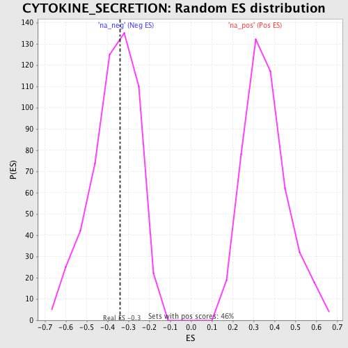

| | | Dataset | GSEA_Cushing_prerank_FC |
| Phenotype | NoPhenotypeAvailable |
| Upregulated in class | na_neg |
| GeneSet | CYTOKINE_SECRETION |
| Enrichment Score (ES) | -0.33958757 |
| Normalized Enrichment Score (NES) | -0.925262 |
| Nominal p-value | 0.54832715 |
| FDR q-value | 0.9705297 |
| FWER p-Value | 1.0 |
Table: GSEA Results Summary
 Fig 1: Enrichment plot: CYTOKINE_SECRETION
Fig 1: Enrichment plot: CYTOKINE_SECRETION
Profile of the Running ES Score & Positions of GeneSet Members on the Rank Ordered List
| PROBE | GENE SYMBOL | GENE_TITLE | RANK IN GENE LIST | RANK METRIC SCORE | RUNNING ES | CORE ENRICHMENT | | 1 | NLRC4 | | | 553 | 0.468 | 0.1195 | No |
| 2 | CADM1 | | | 1787 | 0.271 | 0.1377 | No |
| 3 | ABCA1 | | | 2803 | 0.203 | 0.1462 | No |
| 4 | NLRP12 | | | 4032 | 0.143 | 0.1237 | No |
| 5 | APOA2 | | | 4220 | 0.136 | 0.1568 | No |
| 6 | GLMN | | | 4838 | 0.112 | 0.1586 | No |
| 7 | CRTAM | | | 5541 | 0.089 | 0.1479 | No |
| 8 | NLRP2 | | | 6146 | 0.070 | 0.1368 | No |
| 9 | SRGN | | | 6463 | 0.062 | 0.1390 | No |
| 10 | APOA1 | | | 7389 | 0.034 | 0.0985 | No |
| 11 | PYCARD | | | 7769 | 0.023 | 0.0847 | No |
| 12 | NLRP3 | | | 11773 | -0.088 | -0.1098 | No |
| 13 | CARD8 | | | 13777 | -0.166 | -0.1680 | Yes |
| 14 | NOD2 | | | 14357 | -0.193 | -0.1385 | Yes |
| 15 | CIDEA | | | 17970 | -1.060 | 0.0003 | Yes |
Table: GSEA details [plain text format]

Fig 2: CYTOKINE_SECRETION: Random ES distribution
Gene set null distribution of ES for CYTOKINE_SECRETION